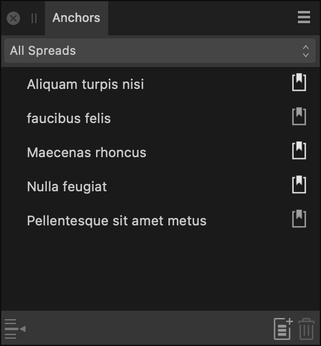

From the Anchors panel, you can create a new anchor at a chosen location in your text, display anchors on all or selected pages, and jump to any anchor within your document.

The following sections are visible from the Anchors panel:
- Area—specify the area you wish to view anchors for from All spreads or by selecting one of the pages listed in the menu.
- Name—displays the name(s) of the displayed anchor(s).
- Go to Anchor—navigates to the selected anchor's location.
- New Anchor—when clicked, opens the Anchor Properties dialog, allowing you to add a new Anchor.
- Remove Anchor—removes the selected anchor.
 Export as PDF Bookmark—when selected, allows the anchor to be exported as a PDF bookmark.
Export as PDF Bookmark—when selected, allows the anchor to be exported as a PDF bookmark.